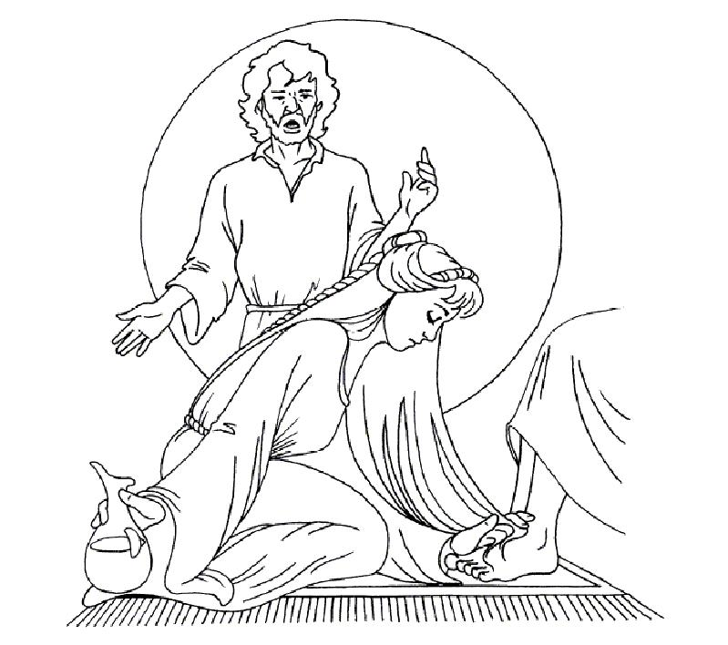

Read the lessons at the Vanderbilt Library website: http://divinity.lib.vanderbilt.edu/lectionary/cLent/cLent5.htm
Elementary School Pew-work
G N A R D O F V D P D W P P
|
(John 12:1-3) Six days before the Passover Jesus came to Bethany, the home of Lazarus, whom he had raised from the dead. {2} There they gave a dinner for him. Martha served, and Lazarus was one of those at the table with him. {3} Mary took a pound of costly perfume made of pure nard, anointed Jesus' feet, and wiped them with her hair. The house was filled with the fragrance of the perfume. (NRSV) |
Word List |
from www.geocities.com/lectionarypuzzles/ free to distribute for free with this notice. Words are in a straight line left to right or top to bottom |
||
1. 1. What was Martha doing?
_____________________________________________________________
2.
What did Mary do?
_____________________________________________________________
3.
Jesus said Mary had a reason for buying the nard. What was it?
_____________________________________________________________
4.
What hint did Jesus give the disciples that his death was coming
soon?
_____________________________________________________________
